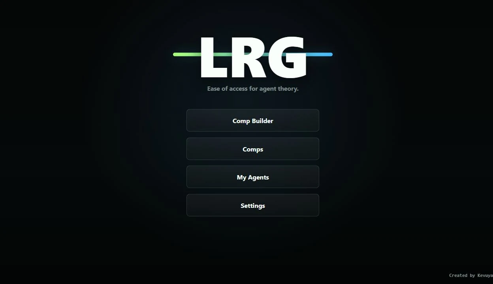

LRG began with a repeated planning problem: teams needed a faster way to compare agent choices, assign player slots, and return to saved compositions without rebuilding everything from memory.
I designed and deployed the application as a focused browser-based workflow. Users can choose a map, organize a five-player composition, customize player labels, save builds locally, and download a screenshot for sharing.
- Role Designer + Developer
- Platform Web / Neocities
- Persistence Browser Local Storage
- Status Live
A small tool built around one clear workflow.

Planning, persistence, and export.
Composition Builder
Map selection, categorized agent choices, and five player slots support a quick team-planning flow.
Saved Strategies
Compositions and player settings persist in the browser so users can return to previous planning work.
Shareable Output
Screenshot downloads turn an interactive composition into an artifact that can be shared with a team.
Software is strongest when it reduces friction.
LRG taught me to think beyond individual interface elements and design around a complete user task: configure, save, revisit, and share. It also gave me experience deploying and maintaining a real application outside a classroom environment.